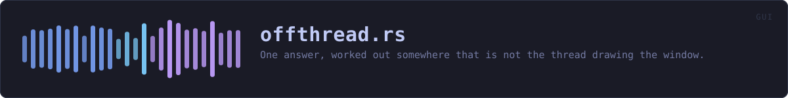

crates/veilvoice-gui/src/offthread.rs
veilvoice-gui · 267 lines · read the source here · or on GitHub
One answer, worked out somewhere that is not the thread drawing the window.
What this is for
A panel often needs something only the machine can say: how much room is free, which sound devices exist, whether a file is there. Each of those is one line to write and none of them is quick. Written in the obvious place, inside the function that draws the panel, that line runs once per frame, sixty times a second, for as long as the panel is on screen.
That is not a theoretical cost. veilvoice_setup::space::free_bytes spawns df on Unix and fsutil.exe on Windows, so the setup tour's last card forked a process per frame. devices::list enumerates the audio hardware, which on Windows is a COM call measured in tens of milliseconds. See F-216.
The shape
Answer holds one value that somebody else works out. The drawing function asks for it once, draws whatever has arrived, and never waits:
self.machine.ask_once(ui.ctx(), measure); // spawns, returns at once
match self.machine.get() {
Some(machine) => draw(ui, machine),
// Still being read. One indicator, from `crate::progress`, which says
// what is happening and honours the reduce-motion setting.
None => crate::progress::strip(ui, "reading this machine", &reach, motion),
}The thread with the news asks for the repaint, because it is the only thing that knows there is any. That rule is why an untouched window draws nothing at all, and a poller here would have quietly undone it.
What it deliberately does not do
It does not re-ask. An answer is read once and kept, because the questions it is for have answers that change rarely and are not worth a process per frame to notice. Something that genuinely changes underfoot asks again explicitly, by calling Answer::ask.
It does not report the worker's death as an error. A worker that panicked drops its sender, and this then reads as "not waiting any more, and the last answer still stands". A panel that showed a number goes on showing the last true one rather than replacing it with a zero, which is what setup's companion probe already decided for itself and for the same reason: an empty list reads as "you have none of these".
Why this is not crate::dialog::Pending
Pending is the same shape for file dialogs and it stays separate, because on macOS it must run its work on the drawing thread: NSOpenPanel can be driven from nowhere else. A type whose whole promise is "not on the drawing thread" cannot have a platform where that is false. The duplication is fifteen lines and the alternative is a promise with an exception in it.
WHAT THIS FILE CONTAINS
267 lines defining 7 functions (6 public), 1 type and 0 constants. Everything below is read out of the source, so it cannot disagree with the code.
The types it owns.
struct Answerline 64 · One value, worked out off the drawing thread.
What happens when it runs. These are the ways in: public, and nothing else in this file calls them, so they are what an outside caller reaches first.
Answer<T>::newline 84 · Nothing asked yet.
reachesdefaultAnswer<T>::ask_onceline 113 · Start the work, unless it has been started before.
reachesaskAnswer<T>::getline 124 · The answer, if there is one.Answer<T>::is_waitingline 145 · Whether the work is still running.Answer<T>::forgetline 151 · Throw the answer away, so the next ask_once asks again.
WHAT CALLS WHAT
The functions this file defines, and the calls between them. An edge means the callee's name appears, called, inside the caller's body. This is a syntactic reading, not a type-resolved one.
The same graph as Mermaid source
%%{init: {"theme":"base","themeVariables":{"background":"#1a1b26","primaryColor":"#1f2335","primaryTextColor":"#c0caf5","primaryBorderColor":"#7aa2f7","secondaryColor":"#16161e","tertiaryColor":"#16161e","lineColor":"#737aa2","textColor":"#c0caf5","mainBkg":"#1f2335","nodeBorder":"#7aa2f7","clusterBkg":"#16161e","clusterBorder":"#2f3549","fontFamily":"ui-monospace, SFMono-Regular, Consolas, monospace","fontSize":"14px"}}}%%
flowchart TD
n_default["Answer<T>::default<br/>line 73"]
n_new(["Answer<T>::new<br/>line 84"])
n_ask["Answer<T>::ask<br/>line 94"]
n_ask_once(["Answer<T>::ask_once<br/>line 113"])
n_get(["Answer<T>::get<br/>line 124"])
n_is_waiting(["Answer<T>::is_waiting<br/>line 145"])
n_forget(["Answer<T>::forget<br/>line 151"])
n_ask_once --> n_ask
n_new --> n_default
click n_default href "https://github.com/tilas01/veilvoice/blob/main/crates/veilvoice-gui/src/offthread.rs#L73" "open the source"
click n_new href "https://github.com/tilas01/veilvoice/blob/main/crates/veilvoice-gui/src/offthread.rs#L84" "open the source"
click n_ask href "https://github.com/tilas01/veilvoice/blob/main/crates/veilvoice-gui/src/offthread.rs#L94" "open the source"
click n_ask_once href "https://github.com/tilas01/veilvoice/blob/main/crates/veilvoice-gui/src/offthread.rs#L113" "open the source"
click n_get href "https://github.com/tilas01/veilvoice/blob/main/crates/veilvoice-gui/src/offthread.rs#L124" "open the source"
click n_is_waiting href "https://github.com/tilas01/veilvoice/blob/main/crates/veilvoice-gui/src/offthread.rs#L145" "open the source"
click n_forget href "https://github.com/tilas01/veilvoice/blob/main/crates/veilvoice-gui/src/offthread.rs#L151" "open the source"
classDef entry fill:#1f2335,stroke:#7aa2f7,color:#c0caf5
class n_new,n_ask_once,n_get,n_is_waiting,n_forget entry
classDef api fill:#1f2335,stroke:#7dcfff,color:#c0caf5
class n_ask api
classDef helper fill:#1f2335,stroke:#bb9af7,color:#c0caf5
class n_default helperThis site loads no third-party script, so it cannot run Mermaid; the diagram above is the same nodes and edges drawn by the generator instead. GitHub renders the source below directly.
ITEMS
| Item | Line | Documentation |
|---|---|---|
Answer pub struct | 64 | One value, worked out off the drawing thread. |
Answer<T>::default fn | 73 | |
Answer<T>::new pub fn | 84 | Nothing asked yet. |
Answer<T>::ask pub fn | 94 | Start the work, replacing anything already in flight. |
Answer<T>::ask_once pub fn | 113 | Start the work, unless it has been started before. |
Answer<T>::get pub fn | 124 | The answer, if there is one. |
Answer<T>::is_waiting pub fn | 145 | Whether the work is still running. |
Answer<T>::forget pub fn | 151 | Throw the answer away, so the next ask_once asks again. |